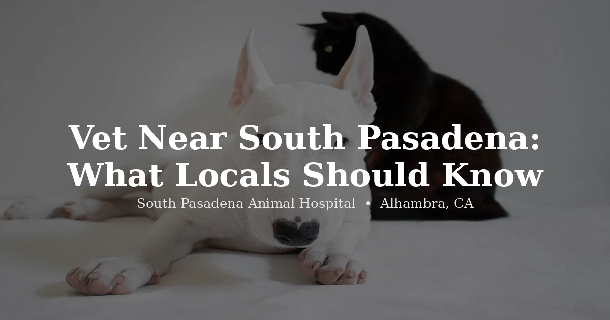

June 9, 2026 · 7 min read
Looking for a Vet Near South Pasadena? Here's What Locals Should Know

If you've searched "vet near South Pasadena" and landed here, there's a decent chance you already know our name — and that might be exactly what's confusing you. South Pasadena Animal Hospital. In Alhambra. We get it. It looks like a typo. It isn't.
Here's the short version: this practice was founded in South Pasadena, at 1911 Fremont Ave, and the name reflects where Dr. Chiang and Dr. Navia built it to serve. A while back, we moved a few minutes east to 3116 W Main St in Alhambra — same doctors, same phone number, same care, just a better space with actual parking. If you're searching for a vet near South Pasadena, we're almost certainly the closest full-service option you'll find, whether or not the name on the building matches the city limits.
Wait — South Pasadena Animal Hospital is in Alhambra?
Yes, and we know it's a little unusual. We outgrew the original Fremont Ave location — two parking spots for an entire clinic's worth of clients was never going to work long-term, especially for anyone arriving with a carrier, a large dog, or a nervous cat. So we found a bigger space close by and made the move.
The new building sits right at the city line, on Main Street where Alhambra meets South Pasadena. We kept the name because changing it felt like erasing where we came from — South Pasadena is genuinely where this practice was built to serve, and a huge share of our long-time clients still live there.
Still have the old Fremont Ave address saved?
If an old bookmark, a search result, or a friend's recommendation pointed you toward 1911 Fremont Ave, that's us — but we're not there anymore. Some directories haven't caught up yet, and we know that's led a few people to drive out and find an empty building. If that's happened to you, we're sorry for the runaround. Update your maps app to 3116 W Main St, Alhambra, CA 91801, and you'll be set going forward. When in doubt, call us at (626) 441-1314 before you head out — we'd rather confirm the address than have you waste a trip.
How close is the new location, really?
For most South Pasadena residents, closer than you'd think — usually under five minutes. From Mission Street, head west; it becomes Main Street, and we're on the left just past the city line. Coming from the Fair Oaks side of town, head south on Fair Oaks Avenue, turn right on Mission, and you're nearly there. We're also right off the 110 freeway at the Fair Oaks exit, which makes us an easy stop whether you're coming from downtown LA, Pasadena, or anywhere along the 110 corridor.
And the parking situation is a genuine upgrade — more than 15 spots, right outside the door. If you ever circled the block on Fremont Ave with an anxious cat in the carrier, you'll appreciate this more than you'd expect.
What we treat — dogs, cats, and exotic pets too
South Pasadena has a meaningfully high rate of exotic pet ownership for a city its size — rabbits, reptiles, birds, guinea pigs, and more show up in our appointment book regularly from local addresses. If your household includes anything beyond a dog or cat, that matters when choosing a vet, because not every practice sees exotics.
We see dogs, cats, reptiles (bearded dragons, geckos, turtles, snakes), birds (parrots, cockatiels, conures), rabbits, guinea pigs, hamsters, and other small mammals — all under one roof, with the same doctors who've been caring for South Pasadena pets for years. Exotic pet appointments are currently open to new patients. Book here or call (626) 441-1314.
Independent, transparent, and still locally rooted
We're privately owned — not part of a regional chain with a billing algorithm deciding what your visit costs. Dr. Chiang and Dr. Navia built this practice from the ground up, and they're still the ones setting the standard for every appointment. We also publish our pricing online, because we think you should be able to plan ahead rather than get surprised at checkout.
If you grew up bringing pets to the Fremont Ave location, or you're new to South Pasadena and just starting your search, the short version is the same either way: we're close, we're the same team, and the name on the building still means what it always did.
Questions we hear often
Is South Pasadena Animal Hospital actually located in South Pasadena?
Our address is 3116 W Main St, Alhambra, CA 91801 — right at the city border where Alhambra ends and South Pasadena begins. The practice was originally located at 1911 Fremont Ave in South Pasadena, which is where the name comes from, and most South Pasadena residents reach us in under five minutes.
What's the fastest route from South Pasadena to SPAH?
From Mission Street, head west — it becomes Main Street, and we're on the left just past the city line. From Fair Oaks Avenue, head south and turn right onto Mission. We're also right off the 110 freeway at the Fair Oaks exit.
Why is South Pasadena Animal Hospital located in Alhambra?
We outgrew our original Fremont Ave space — limited parking made visits difficult, especially with carriers and larger dogs. We moved a few minutes away to Main Street in Alhambra, with the same doctors, same phone number, and more than 15 parking spots. The name stayed because South Pasadena is where the practice was built to serve.
Do you see exotic pets like reptiles and birds near South Pasadena?
Yes. We see reptiles, birds, rabbits, guinea pigs, hamsters, and other small exotic companions, in addition to dogs and cats. Exotic pet appointments are open to new patients — book here.
Is SPAH accepting new patients from South Pasadena?
Yes — we're now accepting new patients, including dogs, cats, and exotic pets. Book through our online portal or call (626) 441-1314.